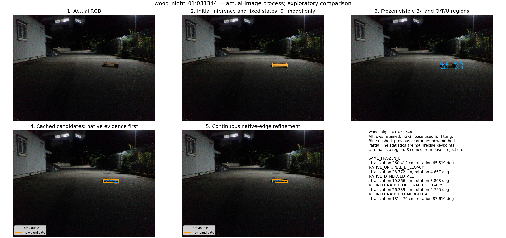
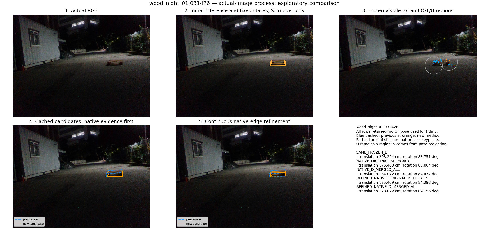
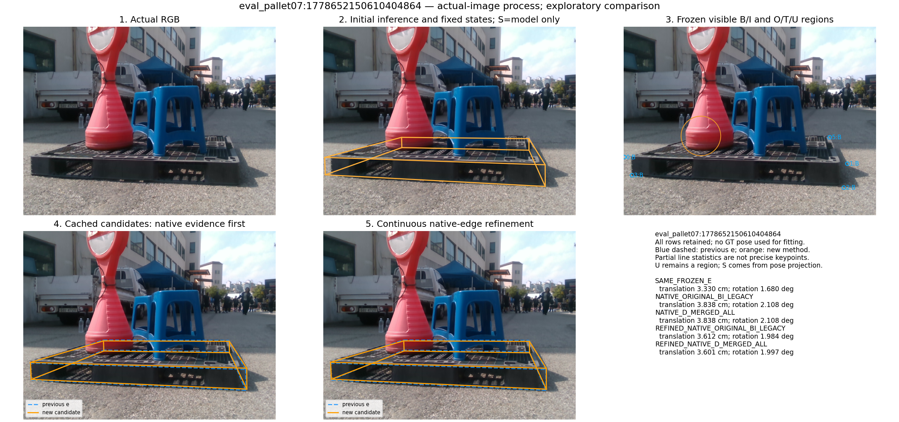

wood_night_01:031344

기존 49장과 추가 143장에 동일한 방법을 적용한 탐색 실험입니다. CAL 46장은 주 평가에 합치지 않았습니다. 추가 143장의 기준 자세는 annotation/PnP로 유도되어 독립 실측 정확도와 구분합니다. 모든 실패·fallback을 포함하며 S는 자세 투영, U는 영역으로 유지합니다.
| 방법 | 49장 ≤5cm | 평균 cm | 최대 cm | 143장 ≤5cm | 평균 cm | 최대 cm |
|---|---|---|---|---|---|---|
| SAME_FROZEN_E | 49/49 | 1.299 | 4.339 | 66/143 | 18.502 | 260.412 |
| NATIVE_ORIGINAL_BI_LEGACY | 43/49 | 3.079 | 40.408 | 74/143 | 14.932 | 175.403 |
| NATIVE_D_MERGED_ALL | 44/49 | 2.667 | 40.408 | 73/143 | 13.997 | 184.072 |
| REFINED_NATIVE_ORIGINAL_BI_LEGACY | 42/49 | 3.160 | 40.380 | 76/143 | 15.357 | 175.469 |
| REFINED_NATIVE_D_MERGED_ALL | 41/49 | 3.118 | 40.045 | 66/143 | 15.578 | 181.479 |


